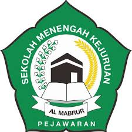

Sehingga makalah ini dapat diselesaikan dengan baik. Tidak lupa Puji Syukur kami ucapkan kepada Allah SWT, yang telah memberikan rahmat dan karunia-Nya shalawat dan salam semoga terlimpahkan kepada Rasulullah Muhammad SAW, keluarganya, sahabatnya, dan kepada kita selaku umatnya.
Kami ucapkan terima kasih kepada semua pihak yang telah membantu dalam penyusunan makalah yang berjudul hak dan kewajiban dalam jasa keuangan ini. Dan kami juga menyadari pentingnya akan sumber bacaan dan referensi internet yang telah membantu dalam memberikan informasi yang akan menjadi bahan makalah. Kami juga mengucapkan terima kasih kepada semua pihak yang telah memberikan arahan serta bimbingannya selama ini sehingga penyusunan makalah dapat dibuat dengan sebaik-baiknya. Kami menyadari masih banyak kekurangan dalam penulisan Makalah ini sehingga kami mengharapkan kritik dan saran yang bersifat membangun demi penyempurnaan makalah ini.
Kami mohon maaf jika di dalam makalah ini terdapat banyak kesalahan dan kekurangan, karena kesempurnaan hanya milik Yang Maha Kuasa yaitu Allah SWT, dan kekurangan pasti milik kita sebagai manusia. Semoga Makalah ini dapat bermanfaat bagi kita semuanya.
Perkembangan teknologi saat ini sangat cepat dan masih akan terus berkembang tanpa ada batasan. Dengan adanya perkembangan ini secara tidak langsung mau tidak mau harus mengikuti perkembangan teknologi. Salah satu perkembangan teknologi yang berkembang sangat cepat adalah perkembangan teknologi dalam bidang komputerisasi. Komputer merupakan sebuah perangkat teknologi yang sangat penting dan tidak bisa lepas dari kehidupan sehari-hari manusia. Komputer juga mempunyai berbagai kegunaan seperti, mengerjakan pekerjaann kantor, tugas kuliah, media informasi dan komunikasi, sebagai media hiburan, dan masih banyak lagi. Komputer juga terbagi dari berbagai komponen—komponen komputer. Denan dasar komponenkomponen komputer tersebut tujuan dari makalah ini adalah membahas tentang pengertian komponen—komponen komputer dan fungsinya
Dalam suatu rencana penelitian langkah utama yang perlu diperbaiki adalah apa yang menjadi masalah pokok penelitian tersebut. Berdasarkan uraian di atas maka dapat dirumuskan beberapa masalah sebagai berikut:
Tujuan dibuatnya makalah ini adalah sebagai berikut:
Komputer adalah sebuah alat atau perangkat yang digunakan untuk mengolah data menurut prosedur yang sudah dirumuskan. Menurut Donald H Sanders, komputer adalah sebuah sistem elektronik yang memiliki fungsi untuk memanipulasi data dengan cepat dan tepat serta telah dirancang atau diorganisasikan supaya secara otomatis menerima dan menyimpan data input, memproses dan dan menghasilkan sebuah output dibawah kontrol rumus yang telah dirancang. Komputer mampu berproses jika semua komponen saling bersinergi dalam memproses. Komputer terdiri dari 3 komponen yaitu, perangkat keras(hardware), perangkat lunak (software) dan tenaga ahli (brainware).
Definisi perangkat keras (hardware) atau yang disebut dengan perankat keras pada komputer ialah semua bagian dari komputer yang mampu dilihat dan di pegang secara nyata hardware atau perangkat keras hanya dapat bekerja berdasarkan perintah atau intruksi yang telah diberikan badanya atau disebut instruction set.
Perangkat keras masukan (Input Device) merupakan komponen dari perankat keras yang memiliki fungsi untuk memasukan data ke dalam memori dan processor untuk diolah agar menghasilkan sebuah informasi yang dibutuhkan. Data yang di imput atau di masukan dapat berupa sinyal input atau maintence imput sinyal imput merupakan data yang simasukan ke dalam sistem komputer sedangkan maintence input merupakan progam yang di gunakan untuk mengolah data yang telah masuk.
Adapun jenis-jenis dari input device ialah sebagai berikut:
keyboard merupakan salah satu dari bagian hardware yang di gunakan untuk menginput atau memasukan data pada komputer. Keyboard memiliki fungsi yaitu sebagai berikut : Memasukan huruf dan angka ke dalam komputer, memasukan karakter khusus sebagai media bagi pengguna atau unsur untuk melakukan perintah seperti menyinpan file (CTRL+) atau mmbuka file (CTRL+O)
Pada saat ini keyboard yang sering di gunakan adalah keyboard keyboard qwerty sendiri memiliki 4 bagian yaitu:
Typewitter key merupakan tombol yang terdiri ataa alphanet. Tombol ini merupakan tombol utama pada keyboard qwerty.
Numeric kay terletak di sebuah kanan keyboard pada komputer sedangkan pada laptop terletak pada atas alphabet. Numeric ket terdiri atas angka.
Mouse adalah salah satu hardware yang memiliki fungsi untuk memindahkan atau menggerakkan kursor, sebagai perintah praktis yang lebih cepat dibandingkan keyboard. Mouse terdiri dari 3 tombol yaitu:
Layer sentuh adalah modifikasi pada layar monitor dimana penggunaannya dengan cara disentuh secara kangsung pada permukaan layer. Pada penggunaan layer sentuh ini pengguna mampu mengubah atau memilih operasi yang akan dilakukan dengan menyentuhnya.
Scanner adalah perankat hardware yang memiliki fungsi untuk menyalin teks atau gambar yang akan dicopy pada scanner. Scanner akan memindah suatu opjek sehingga menghasilkan gambar elektronik dan mengunakan radiasi elektromagnetik atau sinar yang ter lws hat seperti sinar lenser.
Touchpad adalah pengertian mouse pada laptop yang menggunakan nya di sentuh secara langsung pada jaringan tangan.
Processor merupakan komponen penting yang ada pada komputer yang biasanya di gunakan dalam memproses data- data serta mengonrtol berbagai sistem yang ada pada komputer. Processor ini berfungsi sebagai otak untuk mengendalikan kerja komputer dan kerja sama dengan perankat komputer lainya. Bentuk dari processor ini berupa chip (Ic/intregated circuit). Chip (ic/intregeted circuit) adalah sekeping silicon yang berbentuk persegi berukuran kecil yang memuat jutaan transistor serta komponen elektrik. Ada tiga bagian penting dalam processor yaitu Aritcmatics Logica Unit (ALU), Unit Control (CU), dan Unit Memori (MU). Adapun jenis-jenis processor diantaranya processor onboard, slot processor, dan soket processor.
Motherboard merupakan media yang di gunakan untuk menyatukan berbagai macam perangkat keras pada sistem unit komputer. Motherboard berfungsi untuk menghubungkan semuan komponen penyusun yang ada pada computer. Tugas dari Motherboard yaitu menyambung atau menghubungkan bahasa kode antar perangkat keras agar dapat disinergikan menjadi aktivitas kerja perangkat dalam komputer. Ada dua jenis Motherboard yaitu motherboard untuk prosesor intel dan motherboard untuk AMD. Adapun bagian-bagian dari motherboard, diantaranya chipset, PCi, PCI, exspress, ISA, dan AGP.
Power supply adalah sebuah komponen komputer yang memepunyai fungsi sebagai penyalur tegangan alur listrik kepada komponen-komponen hadware komponen lainnya yang terpasang pada motherboard. Maukan komponen ini berupa berupa arus listrik bolak-balik (Ac) selanjutnya satu daya mengonversikan arus bola-balik menjadi arus searah (DC), arus searah inilah yang sesungguhnya digunakan oleh komponen-komponen dalam komputer. Satu daya dapat di hidupkan dan di matikan melalui tombol On-Off yang terdapat di bagian depan casing komputer.
Memori merupakan perangkat pendukung CPU dalam melakukan proses pengoperasiannya. Memori ini digunakan untuk menampung data baik yang akan di proses maupun yang telah di proses dari CPU. Selain itu, memori juga dapat berfungsi untuk menyimpan data secara permanen maupun sementar. Ada dua jenis memeori dalam penyimpanan pada komputer. Yaitu memori internal (memori yang dapat di akses lansung oleh processor) dan memori eksternal (memori tambahan).
Output Device adalah perankat keras komputer yang berfungsi untuk menampilkan hasil proses dari komputer dalam bentuk teks, gambar, atau pun video visual atau biasa di sebut layer tampilan kompuiter. Monitor memiliki jenis resulusi yang digunakan untuk menampilkan gambar, ukuran resolusi ditentukan oleh lebar piksel dan tinggi piksel atau jumlah piksel (picture elemen) yang merupakan titik terkecil penghasil tampilan layer sedangkan ini adalah ukuran layer monitor secara diagonal. Sebuah layer monitor 17 inchi dapat memiliki resolusi 1024x768 atau 1024 baris piksel dan 768 kolom piksel. Layer monitor 20 inchi memiliki 1600x1200. Dengan kata lain semakin besar resolusi maka semakin bagus kualitas gambar atau tampilan yang di hasilkan monitor.
Macam-macam priter :
Printer yang menggunakan kepala cetak berupa sekumpulan pin sehingga akan menghasilkan titik-titik yang saling terhubung dan membentuk teks pada media kertasnya.
Printer ini menggunakan roda yang berisi karakter-karakter sehingga lebih menarik.
Line printer biasanya bekerja dengan mencetak media satu baris perwaktu.
Printer Thermal menggunakan system pemanas elektronik untuk mengaktifkan tinta pada roll karet dan memerlukan kertas berlapis lilin atau paraffin yang dapat membakar titik pada kertas tersebut sehingga dapat menghasilkan cetakan dengan baik. Printer ini biasanya digunakan untuk mencetak data secara cepat seperti nota pembelian.
Ink-Jet merupakan printer yang menggunakan tinta untuk menghasilkan warna dengan cara menyemprotkan titik-titik tinta tersebut kedalam cetakan. Printer ini biasa digunakan untuk bahan presentasi, cetak foto, cetak berwarna, maupun hitam putih, dan mencetak kertas biasa ataupun pada plastic.
Printer Laser menggunakan teknologi laser untuk menghasilkan titik-titik yang membentuk text atau gambar pada media kertas.Printer ini dirancang untuk computer mainframe karena memiliki kecepatan sekitar 229 halaman permenit, dan untuk computer PC dengan kecepatan 4-25 halaman permenit.
Printer ini sama dengan printer Ink-Jet, namun print ini biasanya digabung dengan scanner, fax, fotocopy, atau telephone.
LCD proyektor adalah perangkat keras yang digunakan untuk menampilkan gambar, video, atau data computer pada sebuah layer tau suatu permukaan yang datar seperti tembok. LCD proyektor bisa digunakan sebagai media prestasi karena penampilan gambar atau data dengan ukuran besar sehingga dapat dilihat anggota presentasi dengan jelas. LCD proyektor bekerja dengan bantuan kabel data sebagai alat penghubung antara LCD proyektor dengan computer. Perangkat lunak (software computer) adalah program-program yang berisi perintah dengan menggunakan Bahasa yang dimengerti oleh mesin komputer untuk diproses melakukan suatu perintah. Perangkat lunak ini merupakan catatan bagi mesin komputer untuk menyimpan perintah, maupun dokumen serta arsip lainnya.
System operasi merupakan sebuah penghubung antara pengguna dari komputer dengan perangkat keras computer. Pengertian sistem operasi secara umum ialah pengelola seluruh sumber daya yang terdapat pada sistem komputer dan menyediakan sekumpulan layanan (system calls) ke pemakai sehingga memudahkan dan menyamankan pengguna serta pemanfaatan sumber daya sistem komputer. Sistem operasi berfungsi ibarat pemerintah dalam suatu negara, dalam arti membuat kondisi komputer agar dapat menjalankan program secara benar. Untuk menghindari konflik yang terjadi pada saat pengguna menggunakan sumber daya yang sama, sistem operasi mengatur pengguna mana yang dapat mengakses suatu sumber daya. Sistem operasi juga sering disebut resource allocator.
Program Aplikasi adalah suatu sub-kelas perangkat lunak komputer yang memanfaatkan kemampuan komputer langsungbuntuk melakukan suatu tugas yang diinginkan penguna.
Brainware (tenaga ahli) adalah personal-personal yang terlibat langsung dalam pemakaian komputer, seperti system analisis, programmer, opcrator, user, dll brainweare sering di sebut juga sebagai perangkat lunak intelektual yang akan memakai dan menjelajahi kemampuan hardware/perangkat keras maupun software atau perangkat lunak. Adapun contoh dari brainware, di antaranya:
Netter adalah seseorang individu, organisasi yang akan menggunakan, menjejajahi internet untuk mencari situs-situs yang ada di internet sehingga di sebut dengan surfing dan dengan kata lain juga di sebut penjelajah kata kunci/ keyword. Misalnya kita akan menjelajahi menggunakan yahoo terus mengetikkan kaya kunci tertentu seperti kata tas maka akan menampilkan situs-situs mengenai tas, itulah yang di sebut dengan surfing atau menjelajahi.
Pengolah data elektronik akan mengarah pada penggunaan metode otomatis untuk mengolah data komersil. Biasanya, ini akan menggunakan yang relative sederhana, aktifitas akan berulang untuk memproses volune besar informasi serupa, edp manager mencari setelah Departemen EDP. EDP berarti penggolahan data elektronik. Umumnya pada dasarnya dalam sebuah perusahaan ada departemen yang terlihat semua pekerjaan komputer berupa perusaaan menyebutkan departemen ini dengan EDP departemen.
Network system adalah sebuah jenis oprasi yang akan di tunjukan pada jaringan. Pada umumnya sistem oprasi ini terdiri atas banyak layanan atau service yang di tunjukan untuk melayani pengguna, seperti layanan berbagai berkas, layanan berbagai alat pencetak, DNS, service HTTP service, atau lainya.
Hardware enginner merupakan orang yang bertangung jawab untuk mengembankan metode atau teknik- teknik baru dalam pembuatan sebuah software (aplikasi, driver, ataupun juga sistem operasi).
Komputer adalah sekumpulan alat elektronik yang saling bekerja sama, dapat menerima data (input), mengolah data (prosessor), dan memberikan informasi (output) serta terkoordinasi dibawah control program yang tersimpan di memori komputer, komponen pada komputer terbagi menjadi tiga yaitu: perankat keras (hardware), perankat lunak (software) dan tenaga ahli (brainware). Perangkat keras (hardware) komputer adalahsemua bagian peralatan fisik dari komputer yang dapat di lihat dan di rasakan. Perangkat keras (hardware) komputer mempunyai empat komponen utama, yakni Input Devive, central prosesing unit (CPU), backing storage (storage Device) dan output devices perangkat lunak (software) komputer adalah program yang berisi kumpulan beberapa perintah yang dieksekusi oleh mesin komputer untuk melakukan proses tertentu. Brainware (tenaga ahli) adalah personil- personil yang terlibat langsung dalam pemakaian komputer, seperti system analisis, programmer, operator, user, dll.
Untuk kemajuan teknologi komputer maka diharapkan agar perkembangan komputer kedepan mampu mengubah pola pikir dan menjadikan masyarakat Indonesia menjadi manusia yang kreatif dan inofatif. Serta tumbuhnya kreatifitas hingga menghasilkan suatu karya yang berguna bagi manusia.